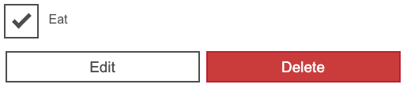
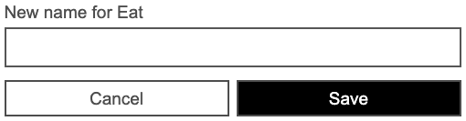
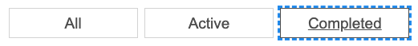

As we near the end of our React journey (for now at least), we'll add the finishing touches to the main areas of functionality in our Todo list app. This includes allowing you to edit existing tasks, and filtering the list of tasks between all, completed, and incomplete tasks. We'll look at conditional UI rendering along the way.
| Prerequisites: |
Familiarity with the core HTML, CSS, and JavaScript languages, knowledge of the terminal/command line. |
|---|---|
| Objective: | To learn about conditional rendering in React, and implementing list filtering and an editing UI in our app. |
We don’t have a user interface for editing the name of a task yet. We'll get to that in a moment. To start with, we can at least implement an editTask() function in App.js. It’ll be similar to deleteTask() because it'll take an id to find its target object, but it'll also take a newName property containing the name to update the task to. We'll use Array.prototype.map() instead of Array.prototype.filter() because we want to return a new array with some changes, instead of deleting something from the array.
Add the editTask() function inside your App component, in the same place as the other functions:
function editTask(id, newName) {
const editedTaskList = tasks.map(task => {
// if this task has the same ID as the edited task
if (id === task.id) {
//
return {...task, name: newName}
}
return task;
});
setTasks(editedTaskList);
}
Pass editTask into our <Todo /> components as a prop in the same way we did with deleteTask:
const taskList = tasks.map(task => (
<Todo
id={task.id}
name={task.name}
completed={task.completed}
key={task.id}
toggleTaskCompleted={toggleTaskCompleted}
deleteTask={deleteTask}
editTask={editTask}
/>
));
Now open Todo.js. We’re going to do some refactoring.
In order to allow users to edit a task, we have to provide a user interface for them to do so. First, import useState into the Todo component like we did before with the App component, by updating the first import statement to this:
import React, { useState } from "react";
We'll now use this to set an isEditing state, the default state of which should be false. Add the following line just inside the top of your Todo(props) { … } component definition:
const [isEditing, setEditing] = useState(false);
Next, we're going to rethink the <Todo /> component — from now on, we want it to display one of two possible “templates", rather than the single template it's used so far:
Copy this block of code into the Todo() function, beneath your useState() hook but above the return statement:
const editingTemplate = (
<form className="stack-small">
<div className="form-group">
<label className="todo-label" htmlFor={props.id}>
New name for {props.name}
</label>
<input id={props.id} className="todo-text" type="text" />
</div>
<div className="btn-group">
<button type="button" className="btn todo-cancel">
Cancel
<span className="visually-hidden">renaming {props.name}</span>
</button>
<button type="submit" className="btn btn__primary todo-edit">
Save
<span className="visually-hidden">new name for {props.name}</span>
</button>
</div>
</form>
);
const viewTemplate = (
<div className="stack-small">
<div className="c-cb">
<input
id={props.id}
type="checkbox"
defaultChecked={props.completed}
onChange={() => props.toggleTaskCompleted(props.id)}
/>
<label className="todo-label" htmlFor={props.id}>
{props.name}
</label>
</div>
<div className="btn-group">
<button type="button" className="btn">
Edit <span className="visually-hidden">{props.name}</span>
</button>
<button
type="button"
className="btn btn__danger"
onClick={() => props.deleteTask(props.id)}
>
Delete <span className="visually-hidden">{props.name}</span>
</button>
</div>
</div>
);
We've now got the two different template structures — "edit" and "view" — defined inside two separate constants. This means that the return statement of <Todo /> is now repetitious — it also contains a definition of the "view" template. We can clean this up by using conditional rendering to determine which template the component returns, and is therefore rendered in the UI.
In JSX, we can use a condition to change what is rendered by the browser. To write a condition in JSX, we can use a ternary operator.
In the case of our <Todo /> component, our condition is "Is this task being edited?" Change the return statement inside Todo() so that it reads like so:
return <li className="todo">{isEditing ? editingTemplate : viewTemplate}</li>;
Your browser should render all your tasks just like before. To see the editing template, you will have to change the default isEditing state from false to true in your code for now; we will look at making the edit button toggle this in the next section!
<Todo /> templatesAt long last, we are ready to make our final core feature interactive. To start with, we want to call setEditing() with a value of true when a user presses the "Edit" button in our viewTemplate, so that we can switch templates.
Update the "Edit" button in the viewTemplate like so:
<button type="button" className="btn" onClick={() => setEditing(true)}>
Edit <span className="visually-hidden">{props.name}</span>
</button>
Now we'll add the same onClick handler to the "Cancel" button in the editingTemplate, but this time we'll set isEditing to false so that it switches us back to the view template.
Update the "Cancel" button in the editingTemplate like so:
<button
type="button"
className="btn todo-cancel"
onClick={() => setEditing(false)}
>
Cancel
<span className="visually-hidden">renaming {props.name}</span>
</button>
With this code in place, you should be able to press the "Edit" and "Cancel" buttons in your todo items to toggle between templates.


The next step is to actually make the editing functionality work.
Much of what we're about to do will mirror the work we did in Form.js: as the user types in our new input field, we need to track the text they enter; once they submit the form, we need to use a callback prop to update our state with the new name of the task.
We'll start by making a new hook for storing and setting the new name. Still in Todo.js, put the following underneath the existing hook:
const [newName, setNewName] = useState('');
Next, create a handleChange() function that will set the new name; put this underneath the hooks but before the templates:
function handleChange(e) {
setNewName(e.target.value);
}
Now we'll update our editingTemplate's <input /> field, setting a value attribute of newName, and binding our handleChange() function to its onChange event. Update it as follows:
<input
id={props.id}
className="todo-text"
type="text"
value={newName}
onChange={handleChange}
/>
Finally, we need to create a function to handle the edit form’s onSubmit event; add the following just below the previous function you added:
function handleSubmit(e) {
e.preventDefault();
props.editTask(props.id, newName);
setNewName("");
setEditing(false);
}
Remember that our editTask() callback prop needs the ID of the task we're editing as well as its new name.
Bind this function to the form’s submit event by adding the following onSubmit handler to the editingTemplate's <form>:
<form className="stack-small" onSubmit={handleSubmit}>
You should now be able to edit a task in your browser!
Now that our main features are complete, we can think about our filter buttons. Currently, they repeat the "All" label, and they have no functionality! We will be reapplying some skills we used in our <Todo /> component to:
<FilterButton /> elements that allow users to change the active filter between all, completed, and incomplete.Add a new hook to your App() function that reads and sets a filter. We want the default filter to be All because all of our tasks should be shown initially:
const [filter, setFilter] = useState('All');
Our goal right now is two-fold:
A JavaScript object would be a great way to relate names to behaviors: each key is the name of a filter; each property is the behavior associated with that name.
At the top of App.js, beneath our imports but above our App() function, let's add an object called FILTER_MAP:
const FILTER_MAP = {
All: () => true,
Active: task => !task.completed,
Completed: task => task.completed
};
The values of FILTER_MAP are functions that we will use to filter the tasks data array:
All filter shows all tasks, so we return true for all tasks.Active filter shows tasks whose completed prop is false.Completed filter shows tasks whose completed prop is true.Beneath our previous addition, add the following — here we are using the Object.keys() method to collect an array of FILTER_NAMES:
const FILTER_NAMES = Object.keys(FILTER_MAP);
Note: We are defining these constants outside our App() function because if they were defined inside it, they would be recalculated every time the <App /> component re-renders, and we don’t want that. This information will never change no matter what our application does.
Now that we have the FILTER_NAMES array, we can use it to render all three of our filters. Inside the App() function we can create a constant called filterList, which we will use to map over our array of names and return a <FilterButton /> component. Remember, we need keys here, too.
Add the following underneath your taskList constant declaration:
const filterList = FILTER_NAMES.map(name => (
<FilterButton key={name} name={name}/>
));
Now we'll replace the three repeated <FilterButton />s in App.js with this filterList. Replace the following:
<FilterButton /> <FilterButton /> <FilterButton />
With this:
{filterList}
This won't work yet. We've got a bit more work to do first.
To make our filter buttons interactive, we should consider what props they need to utilize.
<FilterButton /> should report whether it is currently pressed, and it should be pressed if its name matches the current value of our filter state.<FilterButton /> needs a callback to set the active filter. We can make direct use of our setFilter hook.Update your filterList constant as follows:
const filterList = FILTER_NAMES.map(name => (
<FilterButton
key={name}
name={name}
isPressed={name === filter}
setFilter={setFilter}
/>
));
In the same way as we did earlier with our <Todo /> component, we now have to update FilterButton.js to utilize the props we have given it. Do each of the following, and remember to use curly braces to read these variables!
all with {props.name}.aria-pressed to {props.isPressed}.onClick handler that calls props.setFilter() with the filter’s name.With all of that done, your FilterButton() function should read like this:
function FilterButton(props) {
return (
<button
type="button"
className="btn toggle-btn"
aria-pressed={props.isPressed}
onClick={() => props.setFilter(props.name)}
>
<span className="visually-hidden">Show </span>
<span>{props.name}</span>
<span className="visually-hidden"> tasks</span>
</button>
);
}
Visit your browser again. You should see that the different buttons have been given their respective names. When you press a filter button, you should see its text take on a new outline — this tells you it has been selected. And if you look at your DevTool’s Page Inspector while clicking the buttons, you'll see the aria-pressed attribute values change accordingly.

However, our buttons still don't actually filter the todos in the UI! Let's finish this off.
Right now, our taskList constant in App() maps over the tasks state and returns a new <Todo /> component for all of them. This is not what we want! A task should only render if it is included in the results of applying the selected filter. Before we map over the tasks state, we should filter it (with Array.prototype.filter()) to eliminate objects we don't want to render.
Update your taskList like so:
const taskList = tasks
.filter(FILTER_MAP[filter])
.map(task => (
<Todo
id={task.id}
name={task.name}
completed={task.completed}
key={task.id}
toggleTaskCompleted={toggleTaskCompleted}
deleteTask={deleteTask}
editTask={editTask}
/>
));
In order to decide which callback function to use in Array.prototype.filter(), we access the value in FILTER_MAP that corresponds to the key of our filter state. When filter is All, for example, FILTER_MAP[filter] will evaluate to () => true.
Choosing a filter in your browser will now remove the tasks that do not meet its criteria. The count in the heading above the list will also change to reflect the list!
So that's it — our app is now functionally complete. including focus management in React, which can improve usability and reduce confusion for both keyboard-only and screenreader users.
{{PreviousMenuNext("Learn/Tools_and_testing/Client-side_JavaScript_frameworks/React_interactivity_events_state","Learn/Tools_and_testing/Client-side_JavaScript_frameworks/React_accessibility", "Learn/Tools_and_testing/Client-side_JavaScript_frameworks")}}